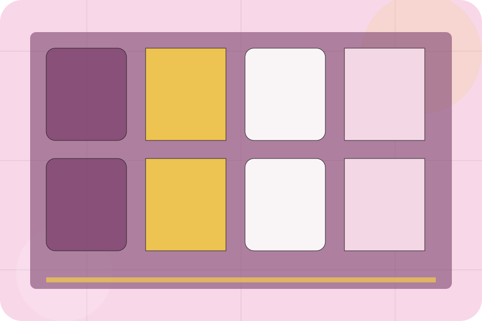
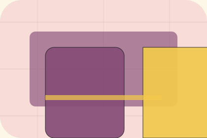

Events / 01
Events by Table
Events shaped for restaurants, cafes & food service decisions.
Events opens as a clear restaurants decision hub: what Table offers, who it helps, why it matters, and which route to take first.
The first screen combines positioning, proof, primary action, and fast internal navigation, so people can act immediately or compare the rest of the events route with context.
Check availabilityPlan the visitReserve with context

Events / 02
Private
Private adds hospitality context to the events route, using the surreal reservation stage structure to support desire and social confidence before visitors choose a next step.
Table uses ornate menu cards and focused copy to make the decision easier to scan, aligning the section with desire and social confidence rather than filling space.
Explore EventsEvents / 03
Corporate
Corporate adds hospitality context to the events route, using the surreal reservation stage structure to support desire and social confidence before visitors choose a next step.
Table uses ornate menu cards and focused copy to make the decision easier to scan, aligning the section with desire and social confidence rather than filling space.
Explore EventsContext
Corporate gives the page a specific angle instead of repeating the navigation label.
Judgment
The ornate menu cards show what to compare, what to avoid, and what matters most for restaurants, cafes & food service visitors.
Direction
The final cue points to a useful internal route so the section keeps the journey moving.
Events / 04
Catering
Catering adds hospitality context to the events route, using the surreal reservation stage structure to support desire and social confidence before visitors choose a next step.
Table uses ornate menu cards and focused copy to make the decision easier to scan, aligning the section with desire and social confidence rather than filling space.
Explore EventsContext
Catering gives the page a specific angle instead of repeating the navigation label.
Judgment
The ornate menu cards show what to compare, what to avoid, and what matters most for restaurants, cafes & food service visitors.
Direction
The final cue points to a useful internal route so the section keeps the journey moving.
Events / 06
Capacity
Capacity adds hospitality context to the events route, using the surreal reservation stage structure to support desire and social confidence before visitors choose a next step.
Table uses ornate menu cards and focused copy to make the decision easier to scan, aligning the section with desire and social confidence rather than filling space.
Explore EventsEvents / 07
Styling
Styling adds hospitality context to the events route, using the surreal reservation stage structure to support desire and social confidence before visitors choose a next step.
Table uses ornate menu cards and focused copy to make the decision easier to scan, aligning the section with desire and social confidence rather than filling space.
Explore EventsEvents / 08
Packages
Packages makes commercial comparison easier by showing fit, scope, and terms before restaurants visitors ask for the next step.
The layout keeps price-sensitive decisions honest: it separates starting scope, fuller delivery, and ongoing support so the visitor can ask a sharper question.
View PricingEntry
Who the offer is for, which scope it suits, and when a different route may be better.
ScopedStay
What is included clearly enough for restaurants, cafes & food service visitors to compare value without hidden jargon.
QuotedPrivate
The practical details that should be confirmed before someone asks to reserve a table.
RetainerEvents / 09
Proof
Proof shows what changes after the work: clearer decisions, visible progress, and proof points that connect the offer to real outcomes.
The layout connects before-and-after thinking with measured outcomes, making the result easy to scan without promising what the business cannot guarantee.
Explore EventsThe uncertainty, delay, or missed opportunity visitors bring into proof.
The clearer, safer, or more valuable state Table is designed to support.
The visible cue that connects proof to a believable decision, not a loose claim.
Events / 10
Reserve Table
Table closes the events route with a clear action, a quick reminder of the value, and a low-friction way to reserve a table.
Visitors who are ready can use the primary action. Visitors who are still comparing can scan the section links, proof, and support routes before they reserve a table.
Reserve TableThe final block keeps the choice simple: act now, compare one more proof route, or send enough detail for a focused response.
Reserve Tabledesire and social confidence
Reserve Table
A sensory restaurant site with pastel stage surfaces, menu cards, room-gallery rhythm, and booking CTAs. Events ends with a direct path to reserve a table, plus enough context for visitors who still need to compare.

Reserve TableNotes
Menus, allergens, prices, and availability must be confirmed by the venue before ordering or booking.